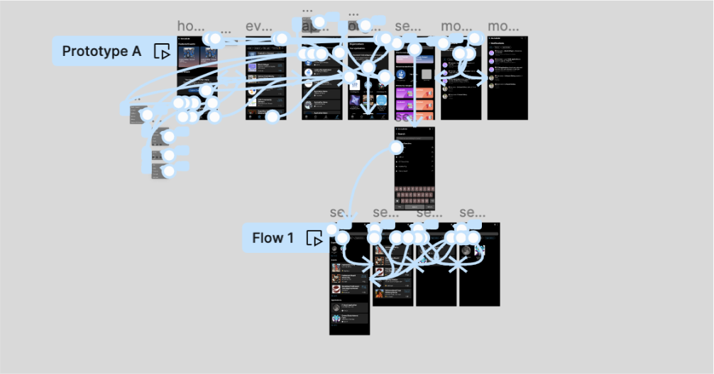

The original app designs do not prioritize saved events, applications, or followed organizations. Furthermore, it is unintuitive and difficult for users to explore new content.
Original designs for The Bulletin
Style guide
Seeing as Freya and I were the first product designers at The Bulletin, we put together a simple style guide including reusable components for consistency and professionalism across the new app.
A/B Testing
In order to make decisions between certain design choices, we conducted A/B testing with 12 students at Columbia University and Barnard College.

←
→
User flow
Freya Buison and I linked together all of the finished designs together in one large flow diagram, including empty states, and marked these designs as ready for development.
This was to ensure that we covered every possible edge case, and that the flow was clear and understood by the development team.
Final designs
The Bulletin 2.5 was implemented and deployed by Matthew Lou.
App restructuring
We opted for a more traditional app layout in order to make the user experience as familiar as possible, including the following changes
Merged the "hot", "new", and "upcoming" filters with existing filters on the events page
Added a bottom navigation bar for events, applications, and organizations
Added options for notifications, search, and extra in the top right
Your Board
A home for saved events, applications, and events and applications from followed organizations.
The empty state displays suggested events, encouraging users to save events.
Empty state
Filled state
Search
Suggested events, browse by category, trending searches, and search result filtering
Notifications
A page consolidating all notifications regarding saved events, saved applications, and followed organizations.
Revamped onboarding
A more exciting, streamlined, and personalized first experience with The Bulletin.